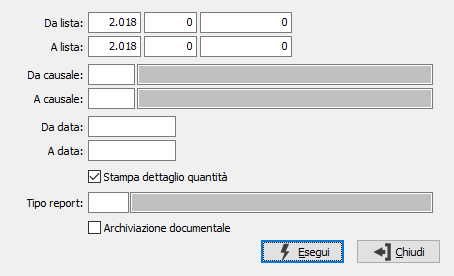

Stampa liste di prelievo
Il programma attiva la stampa differita o la ristampa delle liste di prelievo, sulla base dei parametri di selezione inseriti dall’utente.

DA LISTA: tre campi per contenere rispettivamente anno, serie sezionale e numero del documento da cui si vuole iniziare la selezione. Confermando a vuoto, la selezione inizia dal primo documento compatibile con i successivi parametri.
A LISTA: tre campi per contenere rispettivamente anno, serie sezionale e numero del documento con cui si vuole concludere la selezione. Confermando a vuoto, la selezione termina con l’ultimo documento compatibile con i successivi parametri.
DA CAUSALE: codice della causale documento da cui si vuole iniziare la selezione. Confermando a vuoto, la selezione inizia dalla prima causale valida. Sul campo sono attive le funzioni di ricerca (F9).
A CAUSALE: codice della causale documento con cui si vuole iniziare la selezione. Confermando a vuoto, la selezione termina all’ultima causale valida. Sul campo sono attive le funzioni di ricerca (F9).
DA DATA: data documento da cui si vuole iniziare la selezione. Confermando a vuoto, la selezione inizia dalla prima data valida.
A DATA: data documento con cui si vuole concludere la selezione. Confermando a vuoto, la selezione inizia dalla prima data valida.
STAMPA DETTAGLIO QUANTITÀ: indica se nella stampa desideriamo includere il dettaglio delle quantità (casella con segno di spunta).
TIPO REPORT: consente di specificare un tipo di report specifico per stampare solo i documenti che hanno sulla causale il tipo report inserito. Sul campo sono attive le funzioni di ricerca (F9).
ARCHIVIAZIONE DOCUMENTALE: Il campo è presente solo se installato il modulo di archiviazione; definisce se i documenti devono essere stampati per essere archiviati.